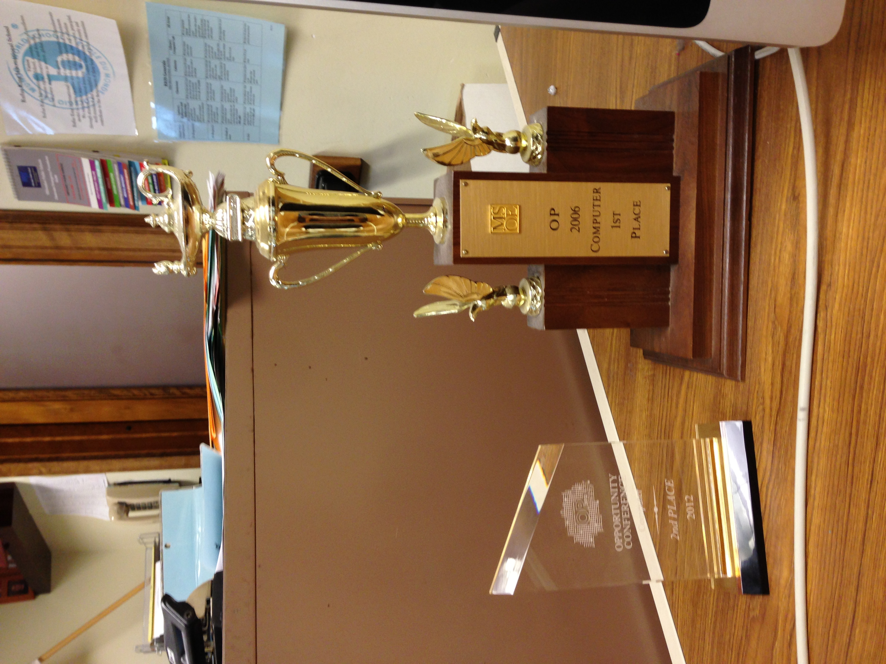

A Look Back
Since I just graduated college with a B.S. in software engineering, I think it’s a good time to look back.
The Early Years #
As a kid, some of my first exposure to computers was the computers the school had that we were sometimes allowed to play with after school. They had a few games on them, mostly edutainment games designed to help kids learn arithmetic, practice reading, and things like that. The most popular one was a game where you were racing, and the more math problems you did, the faster your car went. I liked to play one of the reading ones. The people watching us showed us the games at first, then would sit back as we did our own thing, playing the games.
Eventually, I got bored. I saw a little icon in the dock, and wasn’t sure what it was. So I opened it, and tried to learn it. I asked around, and nobody knew how to play, so I started teaching myself. That game was SimCity 2000. It was a long and frustrating road, but eventually I got really into it and pretty good at it. As a kid, I liked building things. Legos were my favorite toy, and when I played computer games I had similar tastes. I liked games where I built cities, or buildings, or islands.
Eventually my parents wound up giving me one of those old clamshell iBooks, running Mac OS 9. I immediately installed SimCity 2000 on it, and my parents later told me that they were surprised that I could install my own software when I was 5 or 6. I didn’t think about it at the time, I just did it.

Middle School #
In middle school, I still loved messing with computers. I would play SimCity a lot, but I’d upgraded to 3000, which I had mixed feelings about even back then. I joined the Future City competition in 6th grade, where you planned a city, built it in SimCity 3000, and build a model of some sort. It was sponsored by my favorite traditional arts teacher at the school (it was an arts school). We didn’t do particularly well, but we did a lot at the planning stage, and we got an award from the Project Management Institute for it.
I also took as many computer classes as I could. It was pretty limited at that school, but there were two offerings. One was a graphic design class, where we got to play with Photoshop, and the other was a more general “learn to type” kind of class. I loved the graphic design classes, and at the time was considering pursuing that for a career after high school. In the typing class, I would finish early and started playing with Scratch. I didn’t know what Scratch was, nor did I think of it as programming. I just made weird programs where the cat logo of scratch would dance around on a psychedelic background to the tune of The Lonely Island’s “Shrooms (Interlude)”. I was a weird kid.
High School #
Somehow, despite my mediocre middle school grades, I got into a good high school, Rufus King. My mom basically forced me to join the FIRST Robotics team my freshman year, but I wound up sticking around for all four. My first two years I was on the welding team. We had a TIG welder and welded on aluminum 6061, for what it’s worth to the welders out there.
At the end of sophomore year, I needed another class to fill out my schedule. I wasn’t really interested in any of the arts classes at the time, and didn’t want to take a study hall because it would be boring. I asked my friend, and he told me to take Introduction to Computer Programming. It was a blow-off class and an easy A. Being the bad student I was, the idea of an easy A was appealing. I signed up for the class. I had always assumed I would be awful at programming. I was told “Mac users are simple, and don’t understand how computers actually work”, and I believed it.
Junior year came around, and things changed pretty quickly. I became much more dedicated to the robotics team, as well as taking the computer programming class, and some IB (similar to AP) classes. On the robotics team, a lot of kids had started learning to weld, so I figured I’d make myself useful elsewhere. I volunteered to coordinate our scouting efforts, and I also started working with the outreach team more.
In the programming class, I had been informed correctly. It was an easy A, as long as you made an attempt. Many people in that class did not make an attempt. I would do the assignments as they came in, then my friend and I would work on a game with some of my friends. We didn’t know about version control back then, but we made do and had a good time. Looking back, our attempts were woefully inept, but it was fun and a good learning experience. I remember discovering recursion and figuring out the rules of it before the teacher taught it, and he encouraged me to keep trying new things if I wasn’t sure how they worked. One of my friends was weird, and decided to name all of his variables either random strings of characters or after Belgian cities. We stopped accepting his code, and when he needed help, both we and the teacher refused. This was my introduction to why good coding practices are important.
By the end of that class, I had more or less realized that this was what I wanted to do with my life.
At the end of the year, I finally joined the robotics programming team. They gave me the job of reprogramming the robot from scratch to be simpler to control for demonstrations and such. I got it done in a couple weeks, and it was pretty much decided that I would be the lead programmer my senior year.
During senior year, I took two IB computer science classes concurrently with permission from the teacher, the standard-level class and the higher-level class. These were very small classes, 6-7 people, but everyone there wanted to be there, which was different from the previous class.
On the robotics team, I picked up new responsibilities. On the programming team, I wound up not doing anything. A younger student was exceptional and very competent, and being a jack-of-all-trades, I went to other parts of the team that needed assistance, namely scouting, outreach, and machining. I taught myself to use the bridgeport CNC mill, and became the team’s specialist in that area.
At the end of the year, two big things happened in the programming class. First, we had an internal assessment (IA). Some classes had better IAs then others, and computer science was one of, if not the, worst. All things considered, the final report I turned in was 83 pages long. I was proud that I’d been so thorough. The teacher pulled out the IA from a student from a few years prior, who was one of the school’s ultra-talented students. It was over 300 pages long. We also went to the MSOE Opportunity Conference for programming, which was essentially a competition to solve programming problems. My team, largely made up of students on the robotics team who were in the programming classes, took 2nd place at that competition. When we brought back the trophy, the teacher put it right next to the much larger trophy that the same student had won back in his day. I was a bit salty about this.

College #
Then I went to college and got my degree.